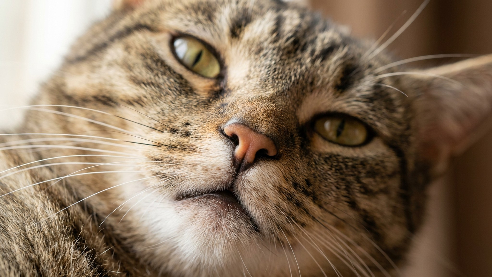

Один кот от щепотки мяты валяется, урчит и обнимает игрушку как пьяный — а другой нюхает и уходит с полным равнодушием. Дело не в характере и не в «правильной» мяте: реакция заложена генами, и до половины кошек к ней невосприимчивы от рождения. Разберём, как работает эффект, с какого возраста ждать реакции, безопасно ли это и чем заменить мяту, если ваш кот к ней холоден.
🐾 Хотите понять, что кошка говорит вам?
Опишите ситуацию или пришлите видео в AnimaLife — AI разберёт поведение вашего питомца и подскажет, что делать. Бесплатно, ответ за минуту.
Разобрать поведение → Разобрать в MAX →
У вас iPhone? AnimaLife есть в App Store
За «опьянение» отвечает вещество непеталактон в листьях и стеблях кошачьей мяты (котовника). Когда кошка его вдыхает, оно связывается с рецепторами в носу и запускает реакцию в зонах мозга, отвечающих за эмоции и поведение. Кошке не «плохо» — это безопасное возбуждение органов чувств.
Проявляется по-разному: одни катаются, трутся мордой и урчат, другие возбуждаются и «охотятся» на игрушку. Эффект короткий — обычно 5–15 минут, после чего наступает период невосприимчивости на час-два, когда добавка мяты уже не действует.
Чувствительность к мяте — наследуемый признак. По разным оценкам, к ней равнодушны примерно от 30 до 50% кошек, и заставить их реагировать невозможно: либо ген есть, либо нет. Возраст тоже важен:
Так что равнодушие вашего кота — не повод волноваться и не «неправильная» кошка. Это просто вариант нормы.
Кошачья мята не наркотик и не вызывает зависимости — кошки не «подсаживаются». Обычно они сами знают меру: наигравшись, теряют интерес. Несколько разумных правил:
Удобнее всего использовать мяту как инструмент: оживить старую игрушку, подружить кошку с когтеточкой или переноской, снять стресс перед событием.
Невосприимчивость к мяте — не приговор для развлечений. На кошек, глухих к котовнику, часто действуют другие растения:
Пробуйте по одному и наблюдайте: у каждой кошки свой «любимый» стимул. А лучшее обогащение среды всё равно даёт не трава, а игра с вами и охотничьи игрушки.
🐾 У вашей кошки так же?
Расскажите в AnimaLife, как ведёт себя ваш питомец, — приложение объяснит причину и даст пошаговый план. Бесплатно, без записи к специалисту.
Разобрать свой случай → Разобрать в MAX →
У вас iPhone? AnimaLife есть в App Store
🐾 Понравился разбор?
Подпишитесь на канал — каждый день разбираем по одному тревожному симптому у кошек и собак: что в пределах нормы, а когда пора к врачу. Подпишитесь, чтобы не пропустить разбор, который может спасти здоровье вашего питомца.